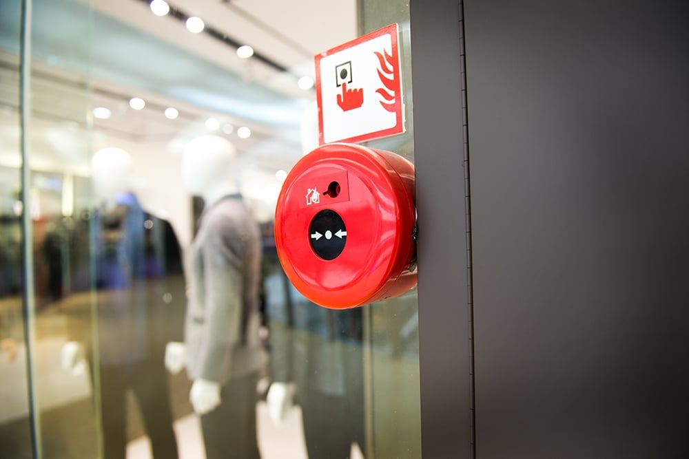

Support
Når strømmen går, teller svaret.
Service og vedlikehold forebygger stans. 24/7 elektrovakt tar den når den likevel kommer.
24/7 elektrovakt
Strømbrudd og feil skjer ikke bare mellom åtte og fire. Elektrovakten er en avtale om at noen svarer, vurderer og rykker ut — også når bygget er tomt.
Vi prioriterer sikkerhet først: isolere det som er farlig, og deretter gjenopprette drift så raskt som mulig.
- 01MottakVi tar imot meldingen, stiller spørsmålene som avklarer omfang.
- 02UtrykningVi rykker ut og isolerer feilen, og dokumenterer hva som er gjort.
- 03EtterarbeidUtbedring, rapport og forslag til hva som bør gjøres for å unngå gjentakelse.

Service og vedlikehold
Fast vedlikehold koster mindre enn havari. Vi avtaler intervall ut fra byggets bruk og anleggets alder.
Avtale
Serviceplan
Vi varsler før service, og dokumenterer hva som er kontrollert.
Kontroll
NEK 405
Internkontroll og el-kontroll etter NEK 405, tilpasset byggets rolle.
Feilsøking
Når noe ikke virker
Vi feilsøker systematisk og utbedrer — ikke bare kvitterer ut.
Kontakt vakt
Ring 22 67 20 62
Vakten svarer hele døgnet. Beskriv bygg, hva som har skjedd og om noe er farlig — så rykker vi ut.
Planlagt arbeid
Bestill service
Skal anlegget kontrolleres, oppgraderes eller utvides? Send en forespørsel med bygg og ønsket tidsrom.